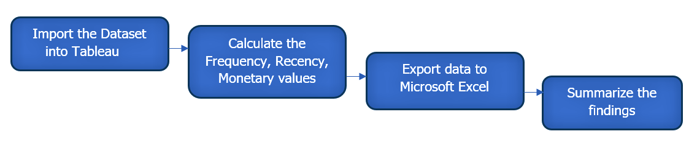
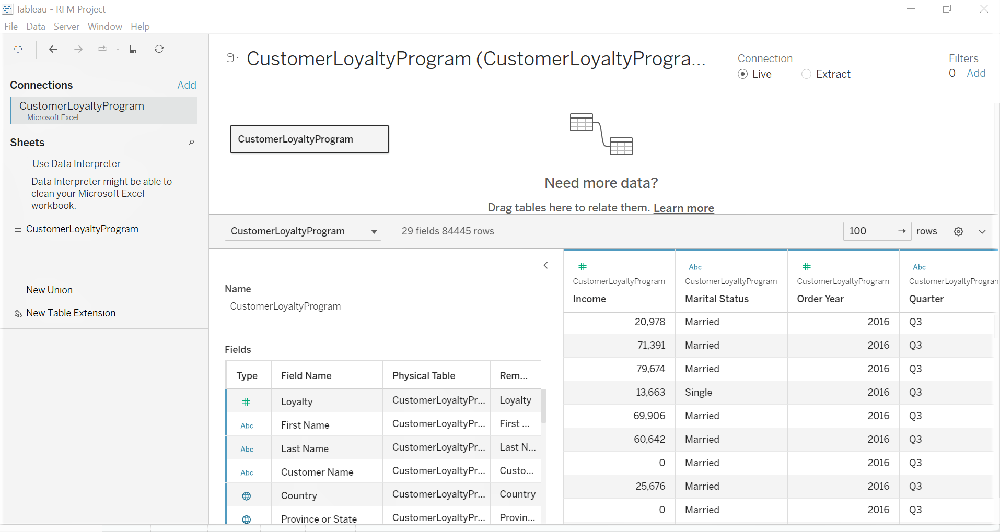
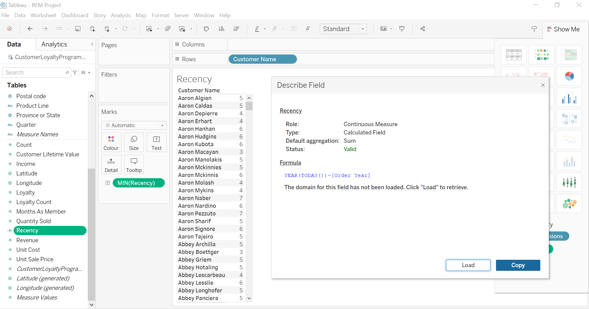
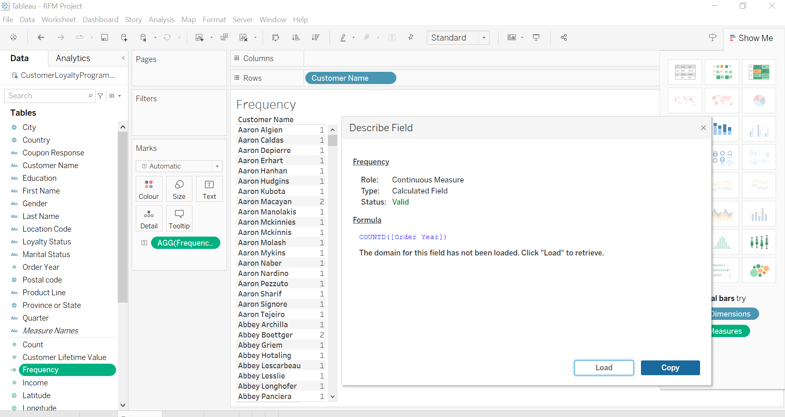
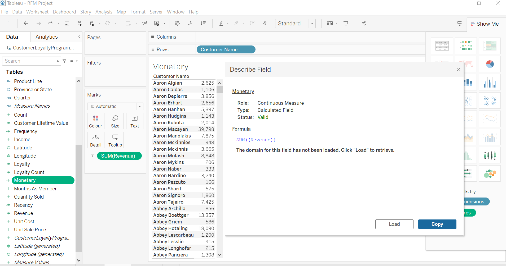
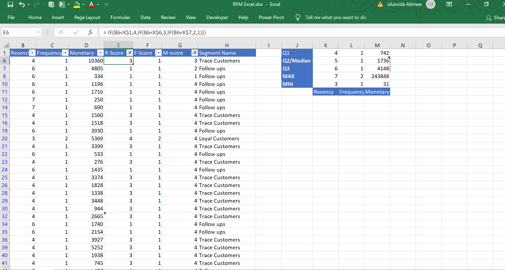
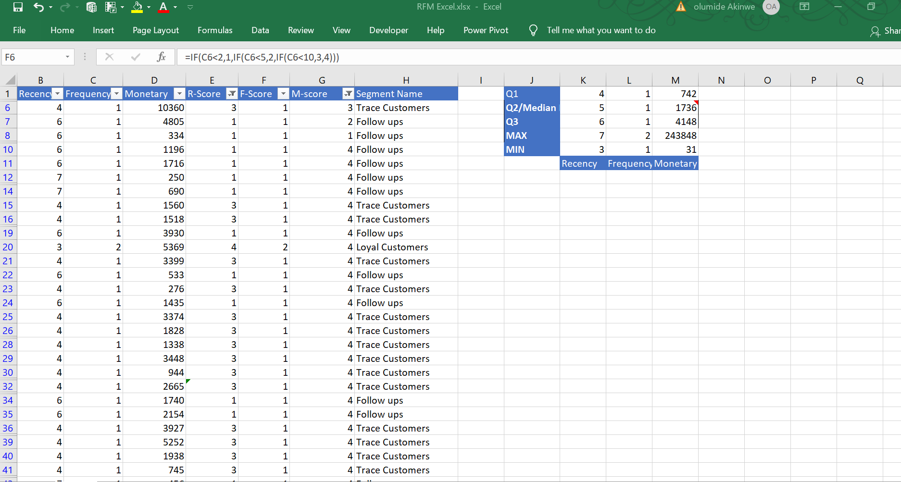
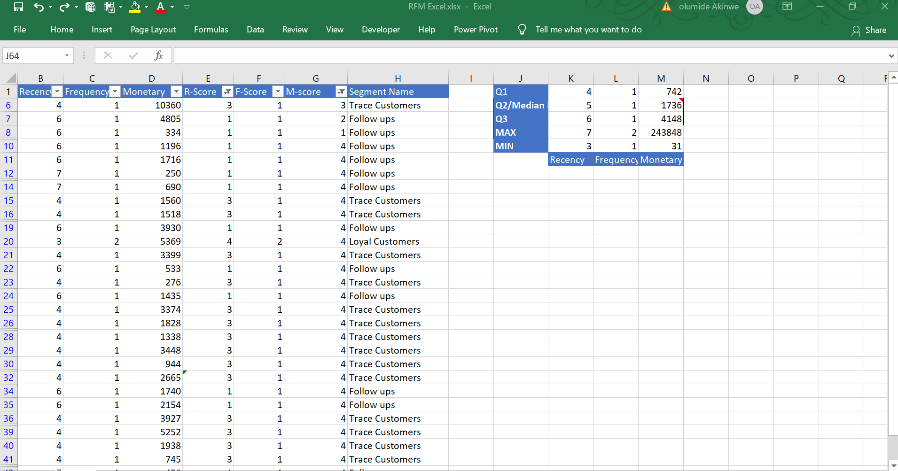

The basic premise is to divide our customer into different buckets or segments based on their behaviours. Using data to categorize customers to help interact with the business, we can score each of them using different metrics. The Recency, Frequency, Monetary score of customers helps us to know which customer is more valuable to the business.
Benefits
To improve sales.
To improve marketing campaigns
Increase customer retention and decrease churn
2. Requirements
Build a database to segment customers based on their purchase patterns.
Are there loyal customers?
Should we increase our marketing campaign?
3. Data Analysis project pipeline

Importing the dataset
The cleaned dataset was imported in Excel csv format into the Tableau software.

Calculating Recency, Frequency, Monetary value
The Recency of customers was calculated by subtracting the current date from the Order year and then taking the minimum value.

The Frequency is a count of the purchases ade during some period of time. In this case, from the available data, I took a distict count of the Order year for the customer.

The Monetary value was calculated by taking a sum of the Revenue which is the Total price X Quantity sold for each customers

Exporting data into excel
The results was exported into the Excel workbook to assign scores to each customers. This was done by finding the quartile ranges. The Q1, Q2 and Q3 was used as a measure.
We divide the scores into 4. The customer who visited recently scores the highest score. I assigned a score of 4 for that, else if recency value is less than Q1 value, I assigned score 4, if less than median Q2 but >Q1,3, if recency less than Q2 but greater than Q3, i assigned 2, for every customer that haven't visited for in the last 30 days I assigned them the minimum score of 1.

The same method applies to frequency, for those frequency less than 2 i.e the customer only visited once, i assigned a score of 1 (lowest), if its less than 5, score 2, if less than 10, score 3 , those greater than 10, score 4. Tis same applies to the monetary score. If monetary value is less than Q2, greater than Q1, we give them 2, those that have spent more than Q3value gets the highest score 3 as described in the formula bar.

In the same manner, I segmented the customers into "Follow up", "Trace customer","Loyal customers" as assigned by me based on their Rscore,Fscore,and M-score. e,g those with R-score of 4, F-score of 2, M-score of 4 as "Loyal customers". This was achieved using the filter button.

Summary of Findings
The RFM analysis has identified a fair amount of Loyal customers, as highlighted by the quartile ranges. About 75% of customers have the high monetary value, however, they do not patronize frequently, and this percentage of customers have visited for a long time.Majority have been categorized as trace and follow ups.Results shows that there is a need to increase marketing campaigns, advertisment and followups.